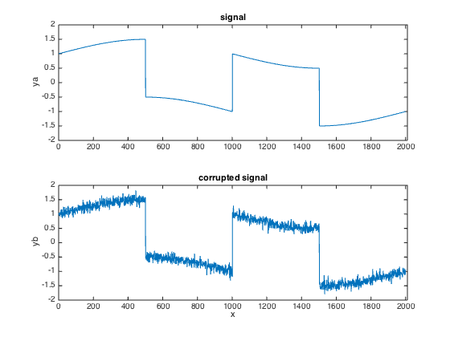
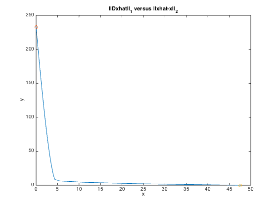
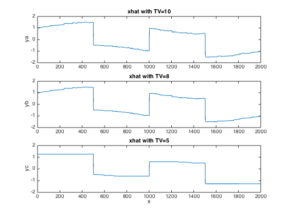
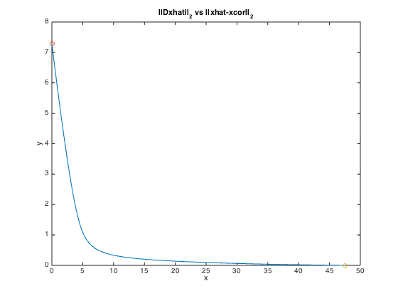
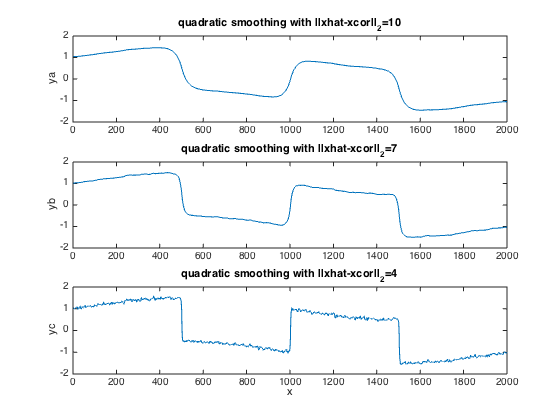

% Section 6.3.3 % Boyd & Vandenberghe "Convex Optimization" % Original by Lieven Vandenberghe % Adapted for CVX Argyris Zymnis - 10/2005 % % Suppose we have a signal x, which is mostly smooth, but has several % rapid variations (or jumps). If we apply quadratic smoothing on % this signal (see SMOOTHREC_CVX) then in order to remove the noise % we will not be able to preserve the signal's sharp transitions. % % We can instead apply total variation reconstruction on the signal % by solving % minimize ||x_hat - x_cor||_2 + lambda*TV(x_hat) % % where TV(x) = sum(abs(x_(i+1)-x_i)) , for i = 1 to n-1. % The parameter lambda controls the ''smoothness'' of x_hat. % % Figure 1 shows the original and corrupted signals. % Figure 2 shows the tradeoff curve obtained when varying lambda % and figure 3 shows three reconstructed signals with different % total variation. % % Figure 4 is a tradeoff curve for quadratic smoothing, while figure 5 % shows three reconstructed signals with quadratic smoothing. % Note how TV reconstruction does a better job of preserving the % sharp transitions in the signal while removing the noise. n = 2000; % length of signal t = (0:n)'; figure(1) subplot(211) temp = ones(ceil((n+1)/4),1); exact= [temp; -temp; temp; -temp]; exact = exact(1:n+1) + 0.5*sin((2*pi/n)*t); plot(t,exact,'-'); axis([0 n+10 -2 2]); ylabel('ya'); title('signal'); exact_variation = sum(abs(exact(2:(n+1)) - exact(1:n))) subplot(212) noise = 0.1*randn(size(t)); corrupt = exact+noise; plot(t,corrupt,'-'); axis([0 n+10 -2 2]); noisy_variation = sum(abs(corrupt(2:(n+1)) - corrupt(1:n))) ylabel('yb'); xlabel('x'); title('corrupted signal'); %print -deps tv_exact_corrupt.eps % figure 6.11, page 315 % tradeoff curve, total variation vs ||x-xcorr||_2 % figure 6.13 page 316 fprintf('computing 100 points on tradeoff curve ... \n'); nopts = 100; TVs = linspace(0.01,.9*noisy_variation,nopts); obj1 = []; obj2 = []; for i=1:nopts fprintf('tradeoff point %d\n',i); cvx_begin quiet variable xrec(n+1) minimize(norm(xrec-corrupt)) subject to norm(xrec(2:(n+1))-xrec(1:n),1) <= TVs(i); cvx_end obj1 = [obj1, TVs(i)]; obj2 = [obj2, norm(full(xrec-corrupt))]; end; obj1 = [0 obj1 noisy_variation]; obj2 = [norm(corrupt) obj2 0]; figure(2) plot(obj2,obj1,'-'); hold on plot(0,noisy_variation,'o'); plot(norm(corrupt),0,'o'); hold off xlabel('x'); ylabel('y'); title('||Dxhat||_1 versus ||xhat-x||_2'); %print -deps tv_tradeoff.eps % figure 6.13, page 316 figure(3) subplot(311) % solve total variation problem cvx_begin quiet variable xrec(n+1) minimize(norm(xrec-corrupt)) subject to norm(xrec(2:(n+1))-xrec(1:n),1) <= 10; cvx_end plot(t,xrec','-'); axis([0 n -2 2]); ylabel('ya'); title('xhat with TV=10'); subplot(312) cvx_begin quiet variable xrec(n+1) minimize(norm(xrec-corrupt)) subject to norm(xrec(2:(n+1))-xrec(1:n),1) <= 8; cvx_end plot(t,xrec','-'); axis([0 n -2 2]); ylabel('yb'); title('xhat with TV=8'); subplot(313) cvx_begin quiet variable xrec(n+1) minimize(norm(xrec-corrupt)) subject to norm(xrec(2:(n+1))-xrec(1:n),1) <= 5; cvx_end plot(t,xrec','-'); axis([0 n -2 2]); xlabel('x'); ylabel('yc'); title('xhat with TV=5'); %print -deps tv_rec_10_8_5.eps % figure 6.14, page 317 % quadratic smoothing, figure 6.12, page 316 % In this case it is not a good idea to use CVX % as the sparsity in the closed form solution % makes it very easy to solve directly A = sparse(n,n+1); A(:,1:n) = -speye(n,n); A(:,2:n+1) = A(:,2:n+1)+speye(n,n); % tradeoff curve with quadratic smoothing nopts = 100; lambdas = logspace(-10,10,nopts); obj1 = []; obj2 = []; for i=1:nopts lambda = lambdas(i); x = (A'*A+lambda*speye(n+1,n+1)) \ (lambda*corrupt); obj1 = [obj1, norm(full(A*x))]; obj2 = [obj2, norm(full(x-corrupt))]; end; figure(4) plot(obj2,obj1,'-'); hold on plot(0,norm(A*corrupt),'o'); plot(norm(corrupt),0,'o'); hold off xlabel('x'); ylabel('y'); title('||Dxhat||_2 vs ||xhat-xcor||_2'); %print -deps tv_smooth_tradeoff.eps nopts = 3; alphas = [10 7 4]; xrecon = []; for i=1:3 alpha = alphas(i); u = 10; l = -10; normx = Inf; while (abs(normx-alpha) > 1e-3) lambda = 10^((u+l)/2); x = (A'*A+lambda*speye(n+1,n+1)) \ (lambda*corrupt); normx = norm(x-corrupt); if (normx > alpha), l = (u+l)/2; else u = (u+l)/2; end; end; xrecon = [xrecon, x]; end; figure(5) subplot(311), plot(xrecon(:,1)); axis([0 n -2 2]) ylabel('ya'); title('quadratic smoothing with ||xhat-xcor||_2=10'); subplot(312), plot(xrecon(:,2)); axis([0 n -2 2]) ylabel('yb'); title('quadratic smoothing with ||xhat-xcor||_2=7'); subplot(313), plot(xrecon(:,3)); axis([0 n -2 2]) xlabel('x'); ylabel('yc'); title('quadratic smoothing with ||xhat-xcor||_2=4'); %print -deps tv_smooth_tradeoff_examples.eps % figure 6.12, page 316
exact_variation =
7.9968
noisy_variation =
232.7843
computing 100 points on tradeoff curve ...
tradeoff point 1
tradeoff point 2
tradeoff point 3
tradeoff point 4
tradeoff point 5
tradeoff point 6
tradeoff point 7
tradeoff point 8
tradeoff point 9
tradeoff point 10
tradeoff point 11
tradeoff point 12
tradeoff point 13
tradeoff point 14
tradeoff point 15
tradeoff point 16
tradeoff point 17
tradeoff point 18
tradeoff point 19
tradeoff point 20
tradeoff point 21
tradeoff point 22
tradeoff point 23
tradeoff point 24
tradeoff point 25
tradeoff point 26
tradeoff point 27
tradeoff point 28
tradeoff point 29
tradeoff point 30
tradeoff point 31
tradeoff point 32
tradeoff point 33
tradeoff point 34
tradeoff point 35
tradeoff point 36
tradeoff point 37
tradeoff point 38
tradeoff point 39
tradeoff point 40
tradeoff point 41
tradeoff point 42
tradeoff point 43
tradeoff point 44
tradeoff point 45
tradeoff point 46
tradeoff point 47
tradeoff point 48
tradeoff point 49
tradeoff point 50
tradeoff point 51
tradeoff point 52
tradeoff point 53
tradeoff point 54
tradeoff point 55
tradeoff point 56
tradeoff point 57
tradeoff point 58
tradeoff point 59
tradeoff point 60
tradeoff point 61
tradeoff point 62
tradeoff point 63
tradeoff point 64
tradeoff point 65
tradeoff point 66
tradeoff point 67
tradeoff point 68
tradeoff point 69
tradeoff point 70
tradeoff point 71
tradeoff point 72
tradeoff point 73
tradeoff point 74
tradeoff point 75
tradeoff point 76
tradeoff point 77
tradeoff point 78
tradeoff point 79
tradeoff point 80
tradeoff point 81
tradeoff point 82
tradeoff point 83
tradeoff point 84
tradeoff point 85
tradeoff point 86
tradeoff point 87
tradeoff point 88
tradeoff point 89
tradeoff point 90
tradeoff point 91
tradeoff point 92
tradeoff point 93
tradeoff point 94
tradeoff point 95
tradeoff point 96
tradeoff point 97
tradeoff point 98
tradeoff point 99
tradeoff point 100
    